Replacing VBA Event Handling with Python
xlSlim allows you to replace VBA event handling code with Python code. The Python code has access to the same events and objects as VBA so it is usually straightforward to translate VBA code to Python. The Python code is often more concise and readable.
We will start by building a very simple task management tool using VBA. Then we will build the same tool using Python and xlSlim. The tool simply lists one task per cell. When a cell is double clicked the task will be marked as completed by striking a line through the text. Double clicking again will mark the task as uncompleted.
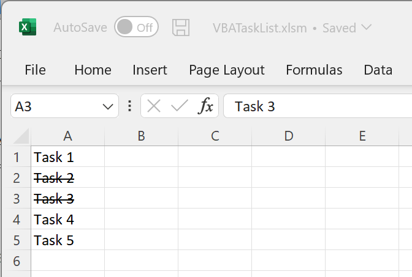{kind=link}
Warning
This functionality requires a premium licence as a Python environment with the pywin32 extensions installed is required. Anaconda distributions include pywin32. See Licensing
A Task Management Tool using VBA
We start by adding a new Class Module MyAppEvents to the workbook, this is done in the VBA Editor (Alt-F11):
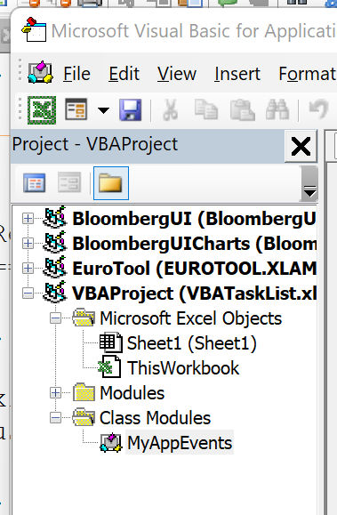{kind=link}
The Class Module must contain this code that creates a myApp Application object and creates a SheetBeforeDoubleClick event handler for myApp:
Private WithEvents myApp As Application
Private Sub Class_Initialize()
Set myApp = Application
End Sub
Private Sub myApp_SheetBeforeDoubleClick(ByVal Sh As Object, ByVal Target As Range, Cancel As Boolean)
If Target.Font.Strikethrough = True Then
Target.Font.Strikethrough = False
Else
Target.Font.Strikethrough = True
End If
Cancel = True
End Sub
Next we need to add code to the Workbook so a MyAppEvents object is created when the workbook is opened.
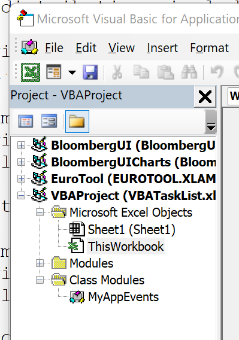{kind=link}
Private AppE As MyAppEvents
Private Sub Workbook_Open()
Set AppE = New MyAppEvents
End Sub
Save and reopen the Excel workbook. Now double clicking on a cell will strike a line through the text and the little task management tool is complete.
A Task Management Tool using Python
Accomplishing the same using xlSlim and Python is straightforward. This Python code defines an event handler that handles the SheetBeforeDoubleClick event:
class MyEventHandler:
"""A very simple task manager."""
def SheetBeforeDoubleClick(self, sh, target, cancel):
if target.Font.Strikethrough:
target.Font.Strikethrough = False
else:
target.Font.Strikethrough = True
# This function is a void, so the result ends up in
# the only ByRef - cancel.
return True
Notice how the SheetBeforeDoubleClick code is almost identical to the VBA code. The Python and VBA code access an identical Excel object and event model, so the code can be very similar.
Save the Python code as a new file on your PC. I saved the file in my Documents folder.
Register the Python code with this RegisterPyModule() formula (amending the location to match where you saved the file):
=RegisterPyModule("c:\users\russe\documents\task_mgt.py")
Create an event handler object in cell A2:
=MyEventHandler()
And add the event handler to Excel in cell A3 using AddPyEventHandler():
=AddPyEventHandler(A2)
At this stage the Excel sheet should look like this:
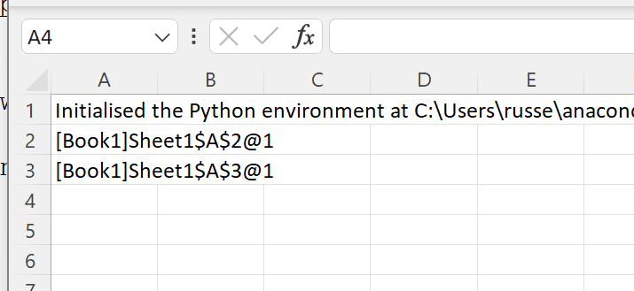{kind=link}
Add a few tasks and double click on some of the tasks. We have the same task management functionality working with Python and xlSlim!
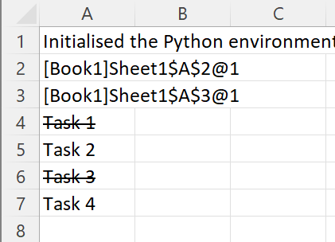{kind=link}
Workbook and Worksheet Events
The simple task management example above handled events at the Application level. Excel also exposes Workbook and Worksheet events. The Microsoft VBA object and event model documentation lists all available events. The Application, Workbook and Worksheet sections each contain an Events group that show the available events:
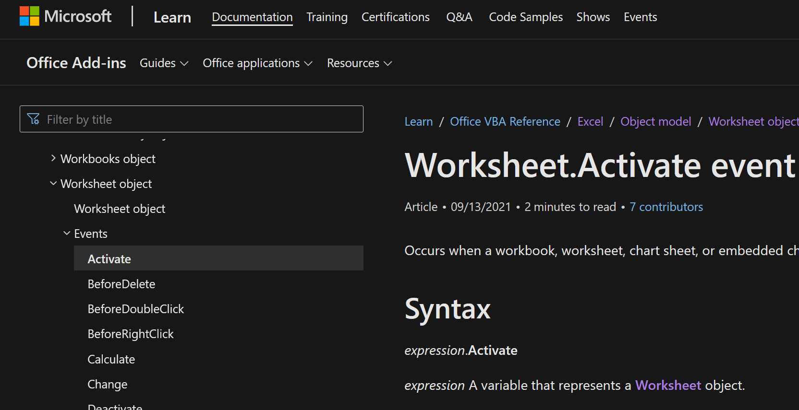{kind=link}
Create a new Python module and add the following Python code:
import ctypes
def messagebox(handle, title, text):
"""Show a modal message box."""
WS_EX_TOPMOST = 0x40000
ctypes.windll.user32.MessageBoxExW(handle, text, title, WS_EX_TOPMOST)
class ExcelApplicationEventHandler:
"""Some Application event handlers."""
def SheetActivate(self, sh):
messagebox(
sh.Application.Hwnd,
"Application SheetActivate event",
f"Active sheet {sh.Name}",
)
def SheetChange(self, sh, target):
messagebox(
sh.Application.Hwnd,
"Application SheetChange Event",
f"Amended sheet {sh.Name} {target.Address} {target.Value}",
)
def NewWorkbook(self, wb):
messagebox(
wb.Application.Hwnd,
"Application NewWorkbook event",
f"New workbook {wb.Name}",
)
def WorkbookNewSheet(self, wb, sh):
messagebox(
wb.Application.Hwnd,
"Application WorkbookNewSheet event",
f"New sheet {sh.Name} in workbook {wb.Name}",
)
class ExcelWorkbookEventHandler:
"""Some Workbook event handlers."""
def NewSheet(self, sh):
messagebox(
sh.Application.Hwnd, "Workbook NewSheet event", f"New sheet {sh.Name}"
)
def SheetCalculate(self, sh):
# Some colour constants are here
# https://learn.microsoft.com/en-us/office/vba/language/reference/user-interface-help/color-constants
sh.Cells.Interior.Color = 0xFF00 # Green
class ExcelWorksheetEventHandler:
"""Some Worksheet event handlers."""
def SelectionChange(self, target):
target.Interior.Color = 0xFFFF # Yellow
def Change(self, target):
messagebox(
target.Application.Hwnd,
"Worksheet Change event",
f"Amended sheet {target.Worksheet.Name} {target.Address} {target.Value}",
)
This code defines a message box function messagebox() that is used to show a pop up window when various events are handled. The classes ExcelApplicationEventHandler, ExcelWorkbookEventHandler and ExcelWorksheetEventHandler contain event handling methods.
Save the Python code as a new file on your PC. I saved the file in my Documents folder.
Register the Python code with this RegisterPyModule() formula (amending the location to match where you saved the file):
=RegisterPyModule("c:\users\russe\documents\further_events.py")
Create event handler objects for application, workbook and worksheet events by creating instances of the ExcelApplicationEventHandler, ExcelWorkbookEventHandler and ExcelWorksheetEventHandler classes
=ExcelApplicationEventHandler()
=ExcelWorkbookEventHandler()
=ExcelWorksheetEventHandler
Your workbook should look similar to this. The 3 classes above are created in cells B2, B3 and B4:
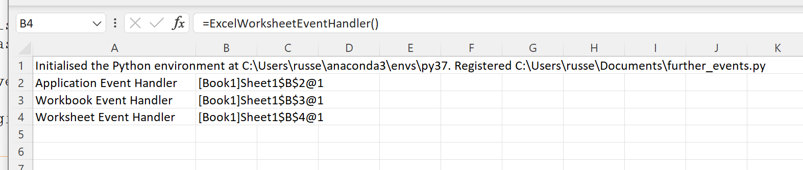{kind=link}
First add the event handler for Application events using AddPyEventHandler():
=AddPyEventHandler(B2)
You will immediately see the SheetChange event was triggered and handled by the ExcelApplicationEventHandler’s SheetChange method:
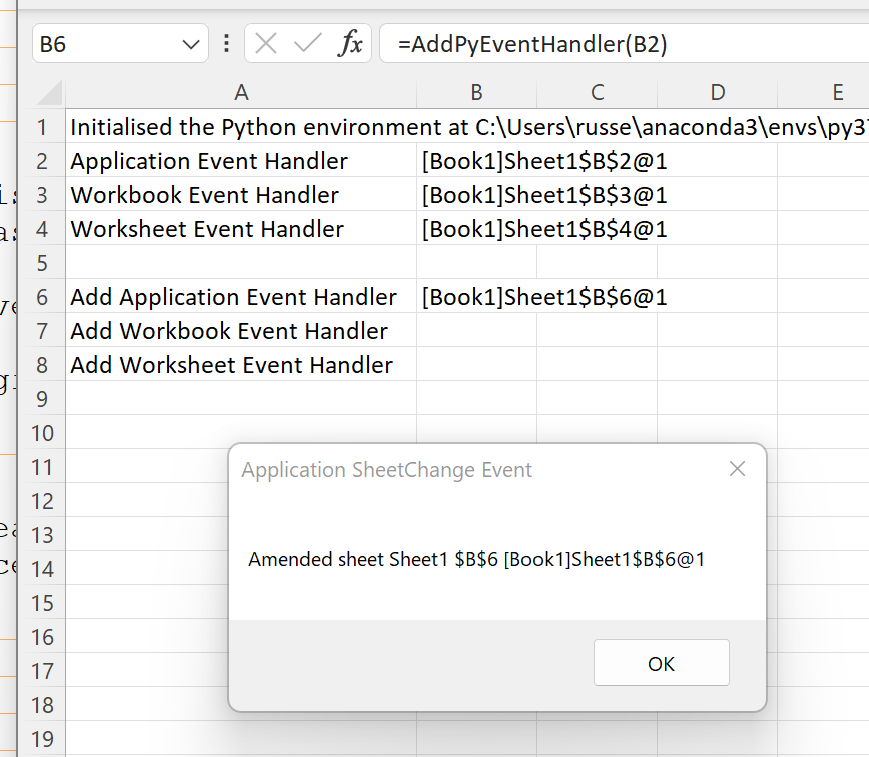{kind=link}
Next add the event handler for Workbook events. The event handler is only added to the specified workbook “Book1” in this case:
=AddPyEventHandler(B3,"Book1")
Now you will again see the SheetChange event triggered and handled by the ExcelApplicationEventHandler’s SheetChange method. However the background is changed to green as the SheetCalculate event was triggered and handled by the ExcelWorkbookEventHandler’s SheetCalculate method:
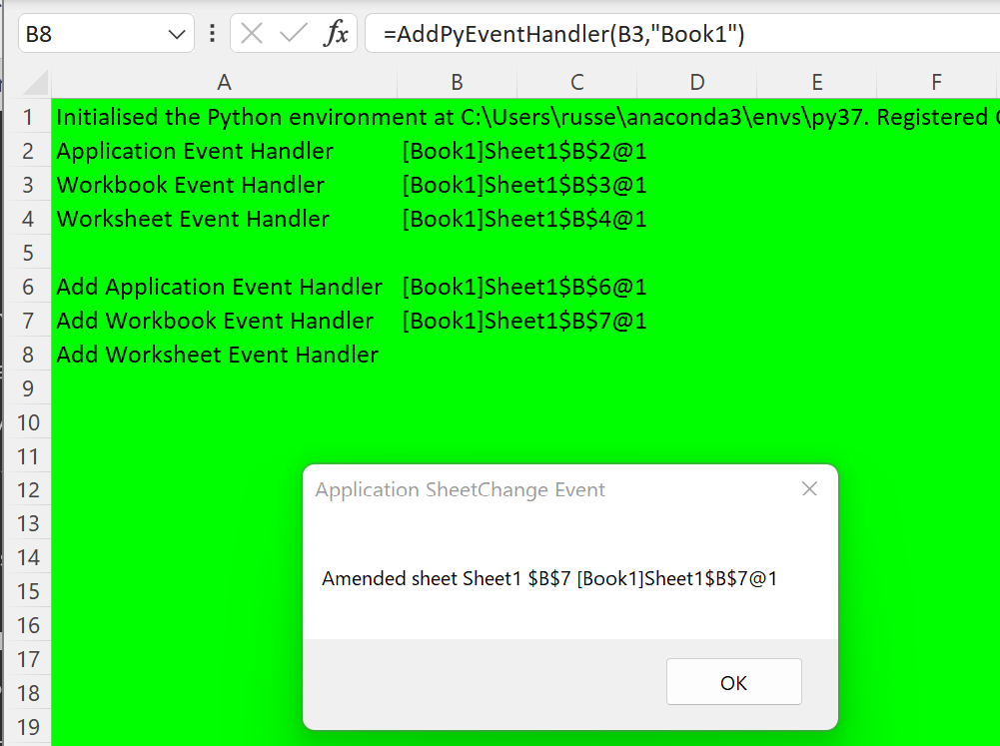{kind=link}
Finally add the event handler for Worksheet events. The event handler is also only added to the specified worksheet “Sheet1”:
=AddPyEventHandler(B4,,"Sheet1")
You will see that the Change event was triggered and handled by the ExcelWorksheetEventHandler’s Change method.
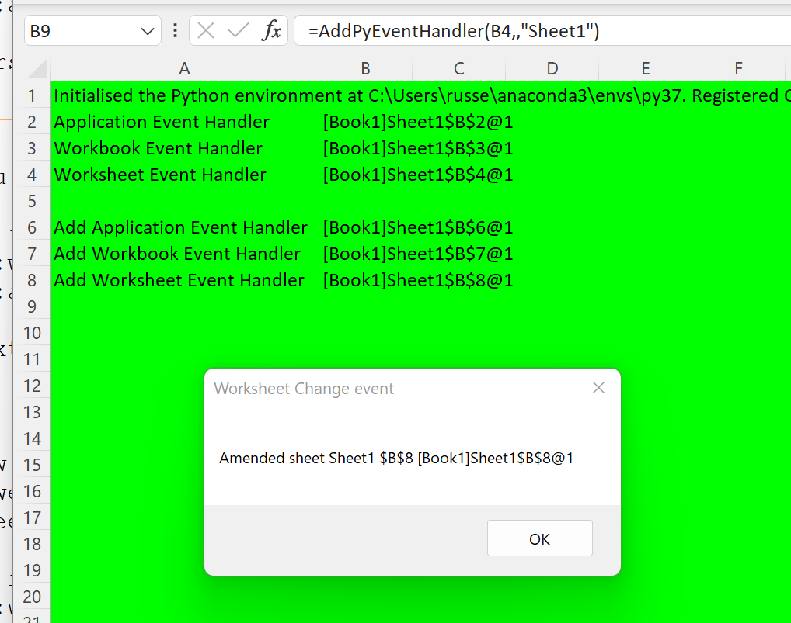{kind=link}
If you change the selected cell the SelectionChange event is triggered and handled by the ExcelWorksheetEventHandler’s SelectionChange method. The result is a yellow background for every selected cell:
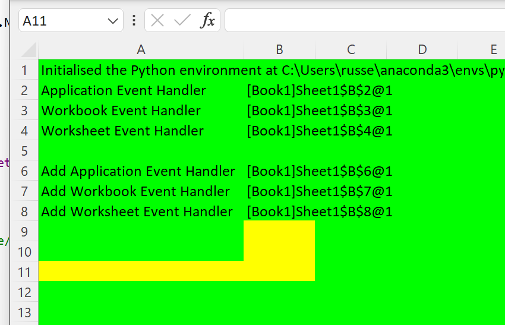{kind=link}
Note
Workbook and Worksheet events are only handled for the workbook and worksheet specified when the AddPyEventHandler() is called.
Sophisticated event-driven applications can be built within Excel using the building blocks shown.
Link Python Functions to Key Combinations
Simple Python functions, taking no arguments, can be assigned to various keyboard combinations. You can configure Excel to run your Python function in response to pressing Ctrl+Shift+P for example. Let’s see how to do this.
Create a new Python module and add the following Python code:
XLSLIM_COMAPPFUNC = None
def PythonRules():
excel_obj = XLSLIM_COMAPPFUNC()
app = excel_obj.Application
app.ActiveWorkbook.ActiveSheet.Cells(3, 3).Value = "Python Rules!"
Save the Python code as a new file on your PC. I saved the file in my Documents folder.
Register the Python code with this RegisterPyModule() formula (amending the location to match where you saved the file):
=RegisterPyModule("c:\users\russe\documents\onkey.py")
Then link the keyboard combination of Ctrl+Shift+P to the function PythonRules() using the LinkPyFunctionToKeys():
=LinkPyFunctionToKeys("^+P", "PythonRules")
{kind=link}
Note
The details of the available keys and how to specify keyboard combinations are described in Microsoft’s documentation of the Application.OnKey method.
Now if you hold down the Ctrl and Shift keys and then press P the value of C3 is set to “PythonRules!”
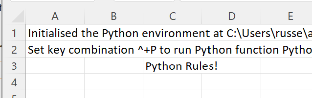{kind=link}
Schedule Python functions
Simple Python functions, taking no arguments, can be scheduled to run at a future time.
Create a new Python module and add the following Python code:
import time
XLSLIM_COMAPPFUNC = None
def WriteTime():
excel_obj = XLSLIM_COMAPPFUNC()
app = excel_obj.Application
app.ActiveWorkbook.ActiveSheet.Cells(3, 3).Value = time.ctime()
Save the Python code as a new file on your PC. I saved the file in my Documents folder.
Register the Python code with this RegisterPyModule() formula (amending the location to match where you saved the file):
=RegisterPyModule("c:\users\russe\documents\ontime.py")
Enter the desired run time in any format that Excel understands. I am entering a time 10 seconds in the future:
'2022-11-30 16:10:05
Then schedule the Python function WriteTime() to run at 16:10:05 using the SchedulePyFunction() function:
=SchedulePyFunction(A2,"WriteTime")
{kind=link}
After 10 seconds the schedule was triggered and my sheet was updated with the currrent time in cell C3:
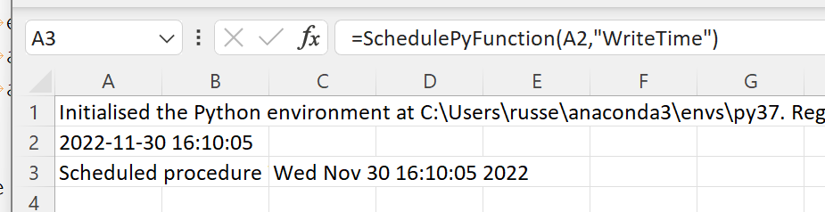{kind=link}
Note
The specific conditions under which a scheduled function will or will not run are described in Microsoft’s documentation of the Application.OnTime method.